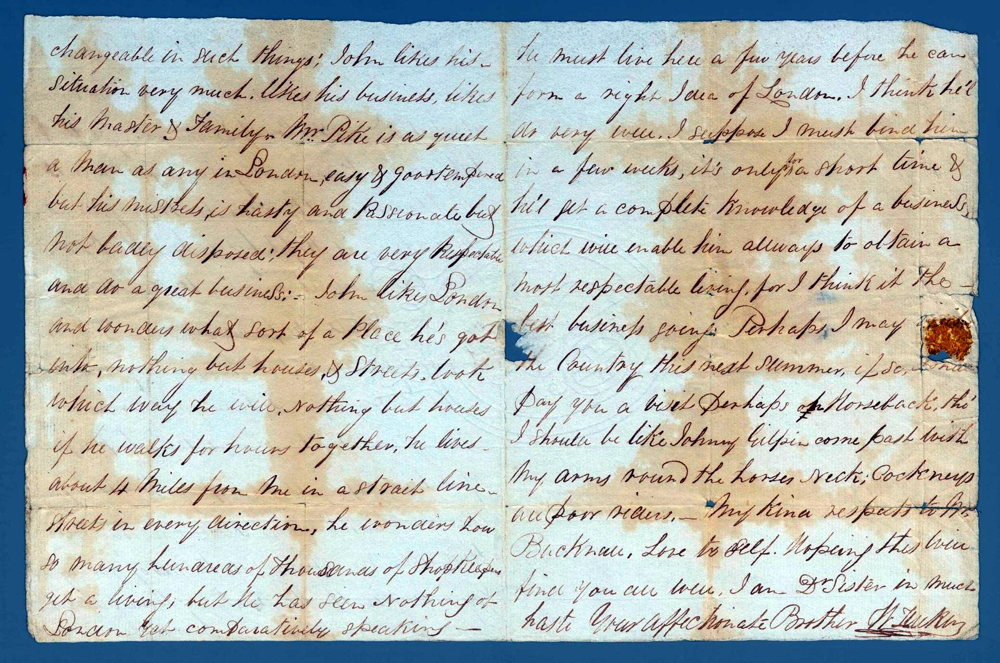

14 February 1831
Young John has come to London to be apprenticed, and cannot get over the size of the place — “nothing but houses if he walks for hours together.”
William, paying part of the boy's keep, is fond and shrewd, and laughs at himself as a poor Cockney rider.
He wonders how so many hundreds of thousands of Shopkeepers get a living, but he has seen Nothing of London yet.
John had just arrived from Gloucestershire.
The reading is given first as written, then in plain modern paragraphs. Dotted words are uncertain; square brackets mark readings to confirm.
First page
In plain reading
14 February 1831
Dear Sister,
I have made the necessary inquiries about the Davis & Co. of Leman Street you mention, but no one knows any such person in that neighbourhood. The number they give as their address is kept by a herb-doctor, in a bad part of town. The powders may answer the purpose intended, but I should very much doubt it myself.
I have just received a letter from Stephen, consenting to pay part of John's expenses, as I pay the other part. This will greatly relieve Father, as they will find him no expense. John likes his situation very much — likes his business, likes his master and family. Mr Pike is as quiet a man as any in London, easy and good-tempered; his mistress is hasty and passionate, but not badly disposed. They are very respectable and do a great business.
[On the antisemitic phrase in the original: see the note below.]

Second page
In plain reading
John likes London, and wonders what sort of a place he has got into — nothing but houses and streets, look which way he will; nothing but houses if he walks for hours together. He lives about four miles from me in a straight line, streets in every direction. He wonders how so many hundreds of thousands of shopkeepers get a living; but he has seen nothing of London yet, comparatively speaking. He must live here a few years before he can form a right idea of London. I think he'll do very well.
Perhaps I may visit the country this next summer, and if so pay you a visit — perhaps on horseback, though I should be like Johnny Gilpin, come past with my arms round the horse's neck; Cockneys are poor riders. My kind respects to Mr Bucknall, love to yourself. Hoping this will find you all well, I am, dear sister, in much haste,
Your affectionate brother, W. Tucker.
A note on this letter
The joy of this letter is young John newly arrived from Gloucestershire and overwhelmed by London — the endless streets, the hundreds of thousands of shopkeepers. William’s joke about riding like Johnny Gilpin (the runaway-horse hero of Cowper’s comic poem) is one of several literary touches in his letters.
A note of caution. The opening lines contain an antisemitic remark, authentic to 1831 and to its writer. It is left in the transcription as a matter of record, not endorsed; readers should meet it as a period document, one whose prejudices are part of the history it belongs to.
Image reproduced from State Library Victoria, PAC-10009902. Reproduction is subject to the Library's permission and conditions of use.